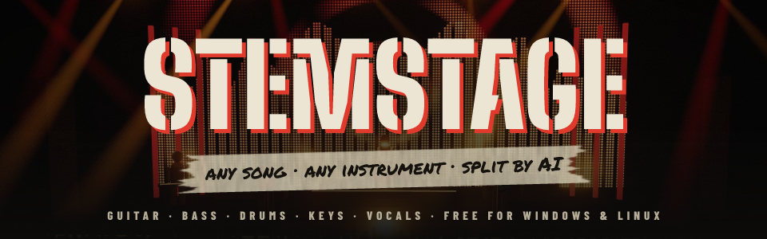

The rhythm game that plays any song
Drop in a track and STEMSTAGE splits it into stems with AI. Every part becomes a playable chart: guitar, bass, drums, keys and vocals, from Easy to Expert, with overdrive phrases. Play it on a gamepad, Rock Band gear, a DualSense, a MIDI kit, or your real guitar, bass and keyboard.

New in 2.0: worlds, bosses and Backstage
- Five worlds, five bosses. The Abyssal Aquarium, Orbital Nebula, Volcanic Forge, Crystal Aurora and Storm Citadel, each with its own boss. A boss can show up mid-song: hit notes to damage it while it attacks your highway with ink, gravity wells, heat haze, frost and lightning. Bosses never change your score, so the boards stay fair.
- Backstage. Build your rock star in a 3D dressing room: 10 hair styles, facial hair, eyewear, hats, jackets, hoodies, coats, LED trim and five stage moves. Then your instruments: guitar and bass bodies, drum kits, keytar and mics, with paint, hardware and LED glow.
- Gear. Level up four parts of each instrument and equip up to three pedals: more overdrive, streak shields, a wider timing window, boss damage and more.
- Stage creator. Pick backdrops, floors, light rigs, props, atmosphere and the crowd, then play any song on your own stage.
- Cash. Every song pays, and bosses pay more. Spend it on wardrobe, upgrades, pedals and stage props.

Any song, any part
- AI stems. Demucs splits drums, bass, guitar, piano, vocals and the rest on your graphics card (the CPU works too).
- AI charts. basic-pitch transcribes the notes, and the auto-charter builds all four difficulties with overdrive phrases.
- Import from anywhere. Audio files, a YouTube search or a whole playlist, with cover art and song details looked up for you.
- Chart editor. Fix any AI chart by hand while it plays, with a controller, keyboard or mouse.
Play your way
- Every controller. Xbox, DualShock 4, Switch Pro, Joy-Con, Rock Band and Guitar Hero guitars and drums, MIDI e-kits and keyboards, and two keyboard layouts.
- DualSense done properly. Adaptive triggers that click like frets and buzz on sustains, haptics and the lightbar, over USB or Bluetooth.
- Real instruments. Plug in a guitar or bass and read scrolling tablature, or play the keys part on a MIDI keyboard.
- Sing. A karaoke pitch track with AI lyrics, and harmony parts for up to three singers.
- Pro mode. Tighter timing for players who want it, and more XP for it.

Play together
- Up to 4 players on one PC, each with their own highway. Your overdrive brings a failed bandmate back.
- Online without port forwarding. Host a room and share the invite code, or press Find match to get matched by mode, skill and region. The song is sent to your friends for you.
- Versus, Battle or Band. Highest score wins; overdrive attacks that shake up the leader; or one band score together. Rematch with one press, or watch as a spectator.
- Public rooms and Discord invites to find a game.

Climb the world
- World leaderboards for every song part, all on one ranked chart: the game lines it up with your own copy of the song, so everyone plays the same notes.
- Weekly challenge and seasons. One song part a week, and season points for where you place.
- Boss hall of fame. The fastest and most boss kills, on the website.
- Chart library. Every song players have charted. Players vote better charts in.
- Tour and career. Venues from the Garage to a festival main stage, a daily challenge, levels and 34 achievements.
And the rest
- Practice. Slow any song down without changing its pitch, and start at any bar.
- Ghosts and replays. Watch any run back, or race your best as a ghost.
- Stream mode. Twitch chat votes for the next song and requests songs, with an OBS overlay.
- Accessibility. Colour-blind palettes, calm visuals, lane assist and auto sustain.
- Export to Clone Hero and YARG chart packs.

Install
| Windows 10 / 11 | Download the installer (…_x64-setup.exe) and run it. |
|---|---|
| Linux x86-64 | The AppImage (make it executable, then run it), or the .deb / .rpm package. |
| AI splitter | Offered during setup: a 3–5 GB download. An NVIDIA graphics card makes splitting about 10× faster. |
| Graphics | Any graphics card with WebGL 2. |
Everything else comes with the app, and it updates itself when a new version is out.
Free and open source
STEMSTAGE is free and MIT licensed.
Website · Play online and bosses · World leaderboard · Source code · Wiki
Only import music you have the rights to use. Your songs stay on your PC: online, they're sent only to the friends in your room, and the world leaderboard gets charts and scores, never audio.
Made with three.js, Tauri, Demucs, basic-pitch and faster-whisper. Lyrics from LRCLIB, song details from MusicBrainz.

Comments